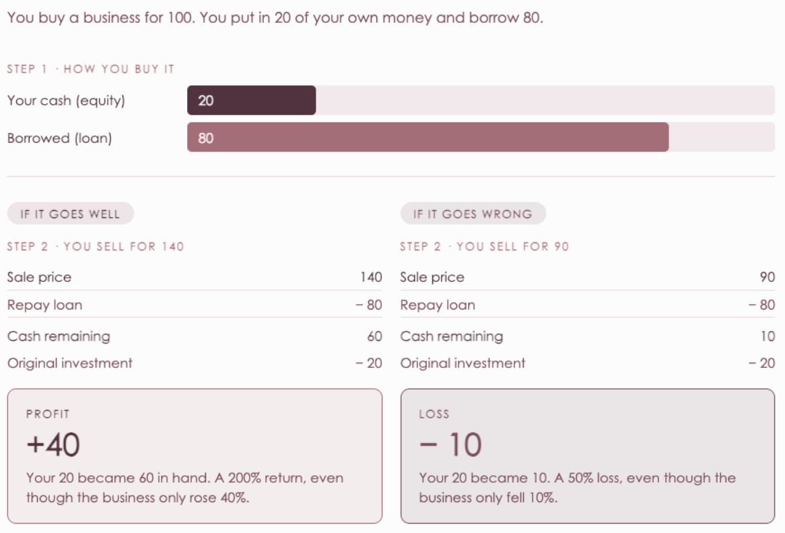

This issue's syllabus · Issue No. 08 · June 28, 2026
Commodities & Alternatives.
Note: this week's article does not cover commodity prices, it focuses on private markets only.
Let us start with what private markets actually means. When you buy a share of Apple or Volkswagen, you are buying on the public market, where anyone with a brokerage account can trade and prices update by the second.
Private markets are everything that happens outside of that. Buying whole companies, or parts of them, that are not listed on any exchange. It is a world most people never interact with directly, but it moves large sums of money. The Volkswagen and Bain deal is a textbook example of it in action. So let us use this deal to understand what is really going on, step by step.
A private equity firm like Bain invests relatively little of its own money. The bulk it raises from a large pool of outside investors who commit their capital in the hope of a strong return. These outside investors are typically large institutions like pension funds, insurance companies, university endowments, and sovereign wealth funds. They are also known as limited partners, because they put in the capital but leave the decisions to the firm.
That pool is committed but not yet spent, and it has its own name in the industry. It is called dry powder, an old phrase about keeping your gunpowder dry and ready to fire. In finance it means the same thing: money that has been raised and is ready, waiting for the right opportunity.
The industry is sitting on near record reserves of dry powder right now, which is a big part of why a firm can move quickly and commit billions to a single deal the moment the right one appears.
As we covered in the Foundation, when the firm buys a company it does not pay entirely in cash. It borrows most of the price. The reason comes down to simple maths, so let us walk through a quick example.
To keep the example simple and easy to understand, the interest the loan charges along the way, which in reality eats into the gain, are left out.
Imagine you buy a business for 100. You put in 20 of your own money and borrow the other 80. A few years later you have improved the business and you sell it for 140. You repay the 80 loan, leaving you with 60 in hand. Subtract the 20 you originally put in, and your actual profit is 40. You turned 20 into a 40 profit. That is a 200% return on your own money, even though the business itself only rose 40% in value.
But the same maths applies if things don't go well. If the business disappoints and you can only sell it for 90, you still repay the 80 loan in full, leaving you with just 10. You lose 10 of your original 20. A 50% loss on your own money, even though the business only fell 10% in value.
Leverage magnifies both gains and losses. The same force that amplifies your upside amplifies your downside with equal speed. That is why private equity firms cannot afford to simply buy and wait.
Since the loss can be very large if things go wrong, private equity firms cannot afford to be passive. They get to work making the business more valuable by cutting unnecessary costs, sharpening its focus, and chasing new areas of growth. This is the focused future that Volkswagen's CEO described for Everllence. The plan, from day one, is to improve the company and sell it a few years later for more than was paid. That moment of selling is called the exit, and it is where the firm finally collects its reward.
And this is why the price made sense to Bain. Everllence was valued at €3.4 billion on Volkswagen's own accounts, but Bain is not buying the past. It is buying the data center and energy growth ahead. And using borrowed money to amplify its reward if that growth arrives. Paying well above book value looks like overpaying if you only focus on the accounting. But it looks like a calculated bet on the future if you believe the investment piece is going to appreciate and Bain clearly believes exactly that.

Private markets are where some of the boldest, best resourced investors in the world place their bets. They raise dry powder, borrow heavily to amplify returns, actively improve the businesses they buy, and aim for a profitable exit. This week that whole process is on full display. The fact that a deal this size is getting done with expensive debt, in a cautious market, tells you just how much confidence is sitting in private capital right now.